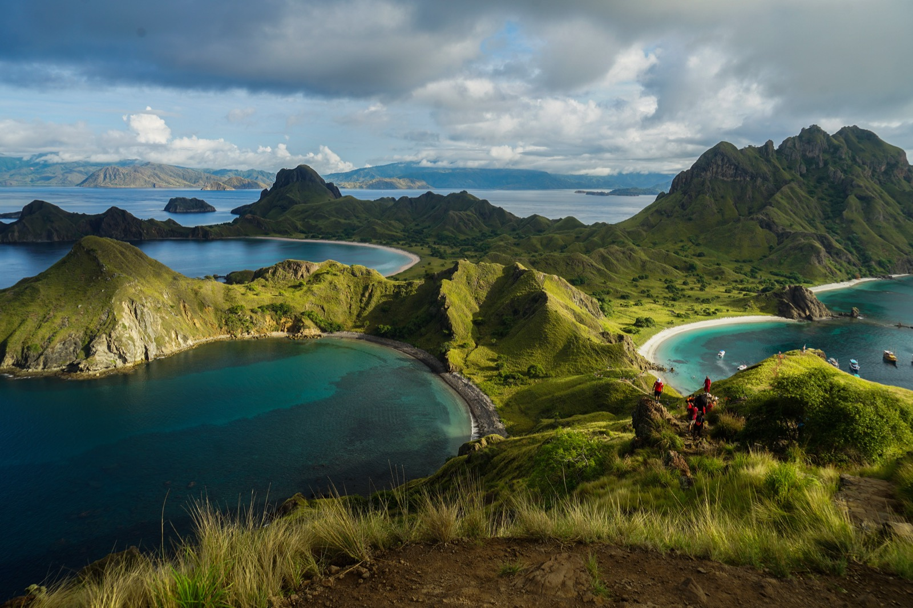
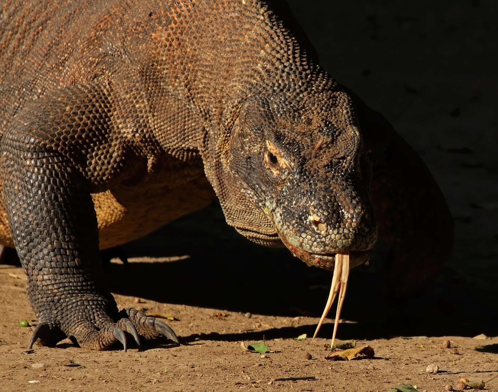
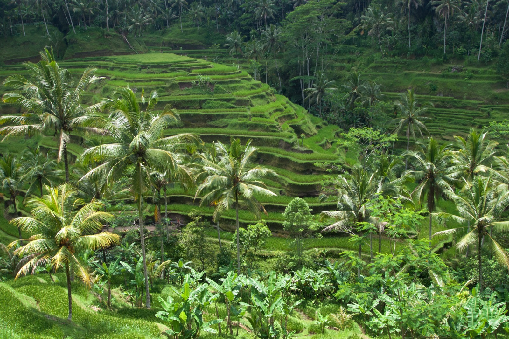
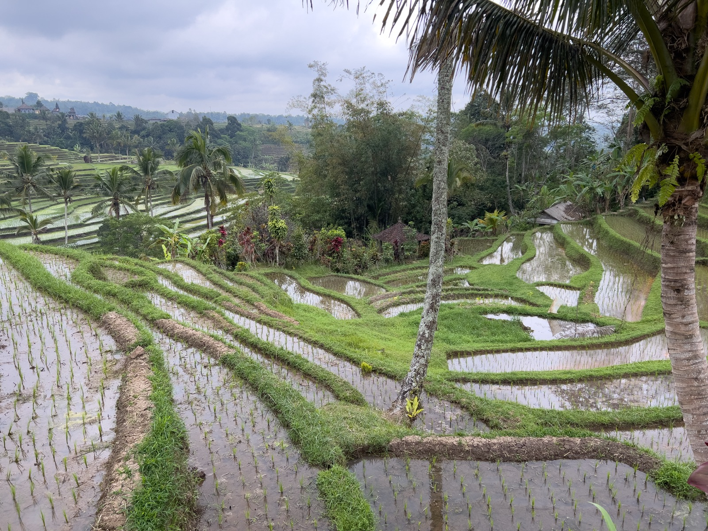
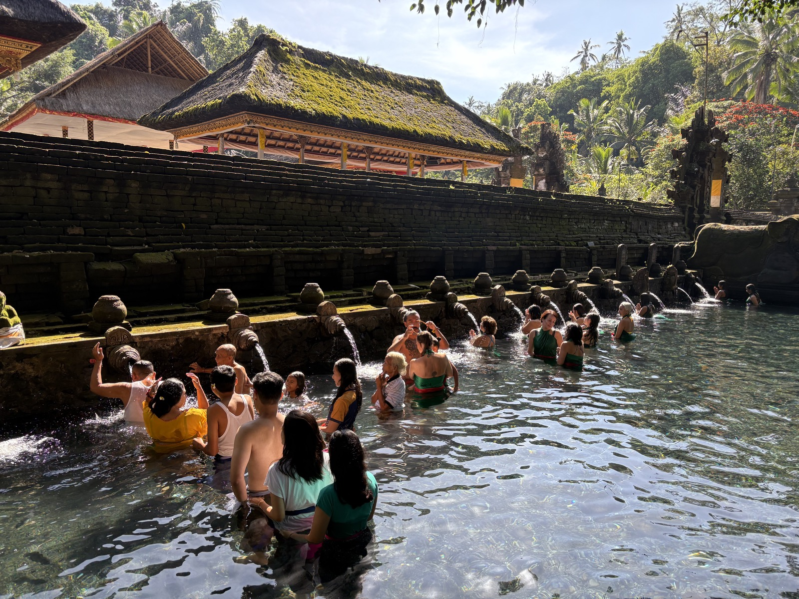

最终主路线
9 天：火山日出＋精灵坠崖＋科莫多船宿
删除乌布文化缓冲日，只保留四个核心景观：巴杜尔火山日出、精灵坠崖、粉色沙滩与科莫多龙。全程仅需巴厘岛—拉布安巴焦往返两段境内飞机。
从巴厘岛的水稻梯田、圣泉与火山日出，飞到科莫多的三色海湾、粉色沙滩、巨蜥与蝠鲼。
删除乌布文化缓冲日，只保留四个核心景观：巴杜尔火山日出、精灵坠崖、粉色沙滩与科莫多龙。全程仅需巴厘岛—拉布安巴焦往返两段境内飞机。
两人同行，舒适型约 ¥16,500；潜水与豪华船型另计。
每个景点都标出最佳时间、停留和风险。图片已保存到本地，离线打开也能显示。

登顶可同时看到三座弧形海湾与不同颜色的沙滩，是印尼最有辨识度的海岛景观之一。没有树荫，日出前后最舒服；台阶多，强风或雷雨时服从关闭安排。
图：Wikimedia Commons · Pulau Padar

世界最大现生蜥蜴，只在少数岛屿野外生存。必须跟公园 ranger，保持距离，禁止奔跑、投喂和独自离队；女性经期提前告知向导，听从现场安排。
图：Wikimedia Commons · Varanus komodoensis

白沙混合红色有孔虫与珊瑚碎屑形成柔和粉色。浅水珊瑚适合浮潜，但不得踩踏或带走红色珊瑚；颜色受太阳角度和潮位影响。
图：Wikimedia Commons · Pink Beach

在流动海水中寻找大型蝠鲼。没有任何船能保证看到；只在船员判断流速适合时下水，不追逐、不触摸，保持至少数米距离。
图：Wikimedia Commons · Manta Alley

离乌布近，清晨人少、光线柔和。它更适合半日轻游；如果只能选一个梯田，景观尺度更大的 Jatiluwih 优先。
图：Wikimedia Commons · Bali rice terraces

UNESCO 文化景观核心区域，展示巴厘传统 Subak 水利系统。规模远大于德格拉朗，适合走 1.5—3 小时田间路线；雨后石路湿滑。
图：Wikimedia Commons · Jatiluwih

凌晨登山约 1.5—2.5 小时，在火山口看晨光与阿贡火山。热门且拥挤；下雨、强风或火山警戒变化时改去 Kintamani 观景咖啡馆，不冒险登顶。
图：Wikimedia Commons · Sunrise at Mt Batur

当地人进行 Melukat 净化仪式的活寺庙，不是水上乐园。穿纱笼、保持安静；是否入池应尊重现场规则，不把祭祀者当作拍照背景。
图：Wikimedia Commons · Tirta Empul

所有科莫多船宿的主要出发点。建议上船前住一晚，下船后也保留一晚或晚班机缓冲；不要把下船时间与飞巴厘岛航班压得太紧。
图：Wikimedia Commons · Labuan Bajo
乌布1晚、沙努尔2晚、拉布安巴焦2晚、船宿2晚、巴厘机场附近1晚。没有文化景点填充日。
机场预约司机，前往乌布约 1.5—3 小时，取决于拥堵。入住后只逛酒店周边或 Campuhan Ridge；不在长途飞行后骑摩托。
约 02:00 接车、04:00 开始登山，日出后下山。中午退房直接转移至沙努尔码头附近；下午只休息。想降低强度可改火山吉普车。
清晨快船往返，走 Kelingking、Broken Beach、Angel’s Billabong 与 Crystal Bay。精灵坠崖只在上方观景，不下到海滩。
选择上午或中午航班，抵达后检查船宿集合信息、行李限制与救生设备。傍晚可去 Bukit Sylvia 看港湾日落。
核对救生衣、救生筏和紧急通信；下午浮潜，日落时看狐蝠离岛。船宿第一晚。
日出登帕达尔岛，随后粉色沙滩浮潜；下午在 Komodo 或 Rinca 跟巡护员寻找巨蜥。当天强度最高。
根据洋流安排蝠鲼点和 Taka Makassar。下午下船后住拉布安巴焦，不接当天飞巴厘岛的紧凑航班。
选择上午或中午航班，住机场附近或沙努尔。这一晚是必要的航空缓冲，避免境内航班延误影响国际返程。
提前 3 小时抵达机场。如果国际航班为早班，优先选择机场步行可达或提供固定班次接送的酒店。
绿色为巴厘岛陆路，橙色虚线为快船与科莫多船宿航线。

1 人、两人同行分摊房间与包车；人民币为 2026 年规划区间。
| 项目 | 参考价／人 |
|---|---|
| 上海—巴厘岛往返经济舱 | ¥3,000–5,500 |
| 巴厘岛—拉布安巴焦往返 | ¥1,000–2,000 |
| 陆地住宿 6 晚 | ¥1,600–3,600 |
| 科莫多 3天2晚船宿 | ¥2,500–5,500 |
| 公园费、ranger 与活动费 | ¥600–1,300 |
| 佩尼达快船、包车、火山与接送 | ¥1,300–2,500 |
| 餐饮 | ¥900–1,800 |
| 签证、旅游税、保险与防疫 | ¥800–1,500 |
| 9 天预计合计 | ¥11,500–22,000 |
不含深潜、购物、酒精饮品和单人房差。科莫多收费组合复杂，以船公司在 Siora／公园系统生成的明细为准，不接受含糊的“全包但无票据”。
信息核对日期：2026-07-16。签证、国家公园费用、火山警戒及船期会变化，出发前再次核对官方页面。